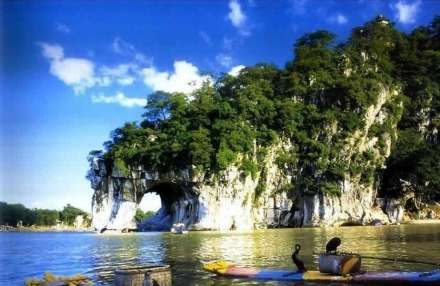
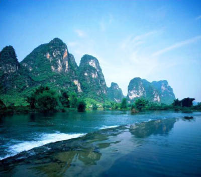
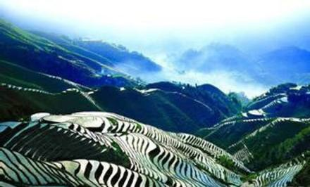
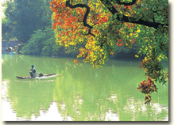
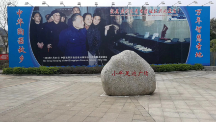
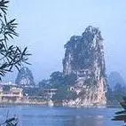
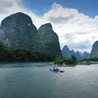
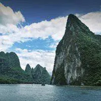
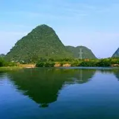
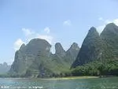

Discover Guilin Scenery
Guilin is renowned worldwide for its spectacular karst landscape. The region features four remarkable qualities: green mountains, clear waters, mysterious caves, and beautiful rocks. As a National AAAAA Tourist Attraction and one of China's Top Ten Scenic Spots, Guilin has earned the reputation of having the finest landscape under heaven for thousands of years.

Elephant Trunk Hill
Located on the west bank of the Li River in southeast Guilin, this hill resembles a giant elephant stretching its trunk to drink from the river, making it the symbol of Guilin. At the top stands the Ming Dynasty Puxian Pagoda, adding an elegant touch to this natural wonder. The Water Moon Cave at the base creates a magical reflection that has inspired poets for centuries.

Li River
The Li River is the largest and most beautiful karst landscape viewing area in the world. Stretching 83 kilometers from Guilin to Yangshuo, it winds like a jade ribbon through towering karst peaks. Along the cruise, visitors can admire spectacular reflections, bamboo raft fishermen, water buffalo, and idyllic countryside scenes that look like a traditional Chinese painting come to life.

Longji Rice Terraces
Known as the "Dragon's Backbone," these magnificent terraced fields cascade from the mountain foot to the summit like chains or ribbons. Located 80 kilometers from Guilin, the terraces span an area of 66 square kilometers with slopes ranging from 26 to 50 degrees. The view changes dramatically with the seasons, offering golden waves of rippling grain or shimmering pools of water.

Reed Flute Cave
Situated on the southern side of Guangming Hill northwest of Guilin, Reed Flute Cave is one of China's most celebrated karst caves. Named after the reeds growing at its entrance that were used to make flutes, the cave features extraordinary stalactites, stalagmites, and rock formations illuminated by colorful lighting, creating an otherworldly underground palace.

Zhenpiyan National Archaeological Park
This site showcases Guilin's 10,000-year heritage of human wisdom. As a crucial origin of Chinese pottery technology, discoveries here have filled gaps in the understanding of global pottery origins. The "dual-material mixing" technique used by ancient people demonstrates remarkable ingenuity, earning Guilin the title of "Sanctuary of Ten Thousand Years of Human Wisdom."





Guilin Scenery at a Glance
- LocationGuilin City, Guangxi Zhuang Autonomous Region, southern China
- ClimateSubtropical monsoon climate with mild winters and warm summers, ideal for year-round travel
- Best SeasonApril to October, with September and October offering the most comfortable weather and stunning views
- UNESCO StatusSouth China Karst World Heritage Site, recognized for its exceptional natural beauty
- Top ExperienceLi River cruise from Guilin to Yangshuo, a journey through the world's finest karst landscape
"Guilin's scenery is the finest under heaven."
This famous saying has been passed down for over a thousand years, capturing the essence of a city where every mountain, river, and cave tells a story of nature's extraordinary artistry.
Green Mountains
Towering karst peaks covered in lush vegetation create a dramatic skyline unique to Guilin.
Clear Waters
The Li River and Yulong River flow with crystal clarity, reflecting the surrounding peaks perfectly.
Mysterious Caves
Reed Flute Cave and Crown Cave showcase stunning underground formations of stalactites and stalagmites.
Beautiful Rocks
Unique rock formations such as Elephant Trunk Hill demonstrate nature's ability to sculpt masterpieces.